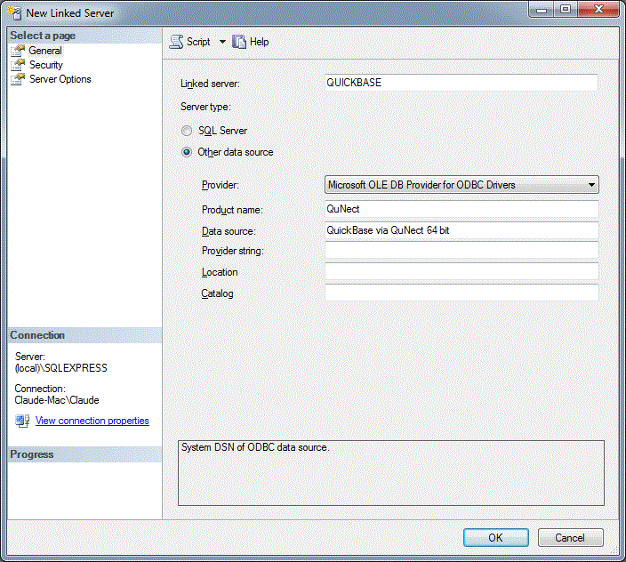
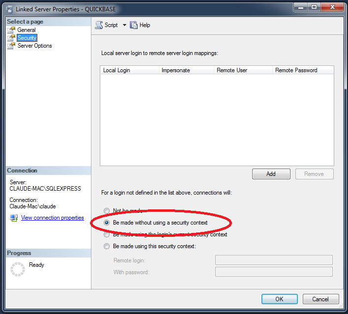
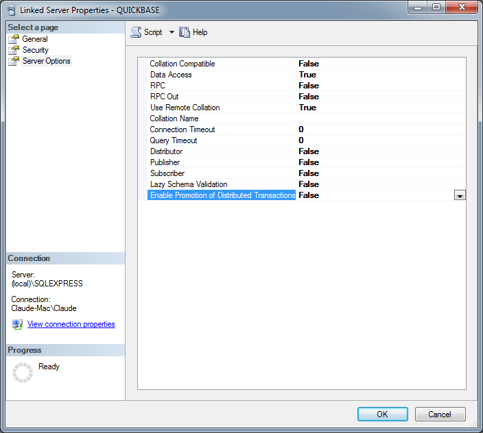

Application Note for QuNect ODBC for QuickBase
Creating a Linked Server via the UI for Quickbase in SQL Server
To create a linked server for Quickbase just open up SQL Server Management Studio
and double click on the Server Objects folder.
Then right click on the Linked Servers folders and choose
New Linked Server.... Then fill out the dialog as indicated in
the figure below. When you install QuNect ODBC for QuickBase it created DSNs (Data Source Names) for
you that are called QuickBase via QuNect 64 bit and QuickBase via QuNect 32 bit.
If you're running a 64 bit version of SQL Server then use the 64 bit DSN otherwise use the 32 bit DSN.
These data sources are not
configured with a username and password until you enter them manually. Please watch the getting
started application note to learn how to configure your DSNs with a username and password. If you don't have
a username and password for the QuickBase via QuNect system DSN then your linked server will not work properly.

Also on the Security properties make sure to stick with the default of "Be made without using a security context".

If while executing queries with four part names, you get an error message like this:
Invalid use of schema or catalog for OLE DB provider "MSDASQL" for linked server "QUICKBASE". A four-part name was supplied, but the provider does not expose the necessary interfaces to use a catalog or schema.
You'll need to uncheck the Level zero only property.
to accomplish this go to:
SQL Management Studio -> Server Objects -> Linked Servers -> Providers
right click on MSDASQL and select Properties and uncheck the Level zero only property.
Also make sure to check the Non transacted updates option to avoid the error below.
Click on “OK” and restart the SQL Server service.

If while executing a SQL statement in a trigger you get an error message like this:
The operation could not be performed because OLE DB provider "MSDASQL" for linked server "QUICKBASE" was unable to begin a distributed transaction.
You'll need to turn off the Enable Promotion of Distributed Transactions property.
to accomplish this go to:
SQL Management Studio -> Server Objects -> Linked Servers
right click on on your linked server and select Properties. Then in the upper left corner of the Properties dialog select the Server Options page and set the Enable Promotion of Distributed Transactions property to false.
Then click on “OK” and restart the SQL Server service.
